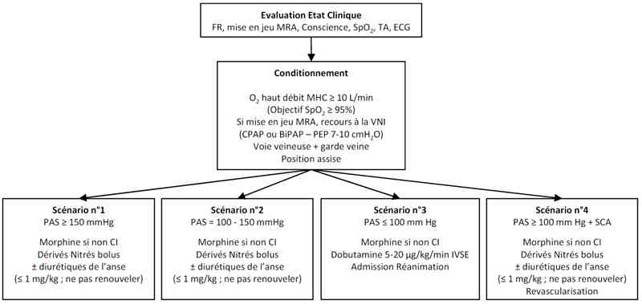

Bienvenue Sur Medical Education
Oedème pulmonaire cardiogénique
Spécialité : cardiologie /
Points importants
-
L'oedème pulmonaire est défini comme une accumulation de fluides et de solutés dans les espaces extravasculaires pulmonaires
-
L'oedème pulmonaire cardiogénique est une des pathologies respiratoires aiguës les plus fréquentes en médecine d'urgence, dont le vieillissement de la population augmente la prévalence
-
La mortalité au décours d'un premier épisode est élevée (20-40%), avec une mortalité à un an d'environ 50%
-
L'OAP est une expression générique de l'insuffisance cardiaque (IC) aiguë, correspondant en fait à des tableaux cliniques hétérogènes en fonction du terrain et du mode de décompensation
-
Le diagnostic étiologique est parfois difficile compte-tenu de l'âge des patients et de la fréquente coexistence de polypathologies
-
Les médicaments utilisés à la phase aiguë n'ont pas varié depuis plusieurs décennies; leurs modalités d'administration ont par contre complètement changées, en favorisant l'utilisation de bolus en titration, plutôt que des administrations continues à faible posologie
-
La ventilation non invasive (VNI) a une place importante à la phase aiguë du traitement, tant en intrahospitalier aux urgences, qu'en préhospitalier
Présentation clinique / CIMU
SIGNES FONCTIONNELS
Présentation clinique / CIMU
SIGNES FONCTIONNELS
Respiratoires
- Tachypnée superficielle
- Orthopnée
Cardiovasculaires
- Tachycardie
- Rechercher la notion de douleur thoracique (facteur précipitant ou aggravant)
Neurologiques
- recherche du facteur de gravité représenté par les signes d'hypercapnie aiguë (sueurs, asterixis, flapping, troubles de la conscience allant de la somnolence au coma)
CONTEXTE
Terrain
- En préhospitalier, le diagnostic d'OAP est posé pour la moitié des patients de plus de 65 ans consultant pour dyspnée aiguë
- La notion d'IC préalable à l'interrogatoire renforce de façon importante le diagnostic
- l'absence d'antécédent d'IC permet également de réduire la probabilité diagnostique
Circonstances de survenue
- Classiquement dyspnée aiguë nocturne, mais l'aggravation progressive sur quelques jours est possible
EXAMEN CLINIQUE
Signes généraux
- Tachycardie ; fréquente tachyarythmie
- HTA systolo-diastolique (dans 65% des cas > 160/90 mmHg)
- Une PA basse avec différentielle pincée est un facteur de gravité
Inspection
- Permet en « un clin d'oeil » d'évaluer la gravité d'un patient et la nécessité immédiate d'assistance ventilatoire :
- Patient en position assise, au bord du lit (non discriminant)
- Canose (SpO2 = 85% à l'air ambiant)
- Signes d'insuffisance circulatoire périphériques et marbrures
- Mise en jeu des muscles respiratoires accessoires (balancement thoraco-abdominal +++)
- Expectorations mousseuses, rose saumoné (rares, sauf dans les formes majeures)
Examen pulmonaire
- Tachypnée (noter FR - évaluation manuelle)
- Sibilants bilatéraux, diffus
- Crépitants bilatéraux, diffus
Examen cardiaque
- Existence d'un troisième bruit cardiaque
- Apparition récente d'un souffle cardiaque (en cas de rupture ischémique de pilier par ex.)
- Recherche de signes de décompensation cardiaque globale (TJ, RHJ, Hépatalgie et/ou hépatomégalie, OMI)
EXAMENS PARACLINIQUES SIMPLES
ECG : intérêt double ; recherche d'un facteur déclenchant éventuel (ex. ECG) et intérêt diagnostique :
- ECG normal ou uniquement tachycardie sinusale
- ECG avec AC/FA, tachycardie ventriculaire, signes IDM...
SpO2 basse
CIMU
-
Tri 1 ou 2 en fonction de la gravité clinique
Signes paracliniques
BIOLOGIE
-
Ionogramme sanguin (recherche acidose métabolique lactique si état de choc, hyperkaliémie si insuffisance rénale)
-
Gaz du sang artériel en cas de dyspnée importante, de troubles de conscience et/ou d'hypoperfusion tissulaire (marbrures, HoTA)
-
Dosage du BNP ou NT-pro BNP : Il n'a d'intérêt qu'en deuxième intention, en cas d'examen non contributif (ex. : inutile si CT et histoire caractéristique...) :
-
BNP = 400 pg/mL ou NT proBNP = 1200 pg/mL : très fortement évocateur d'une IC aiguë
-
BNP < 100 ou NT proBNP < 400 pg/mL : diagnostic d'OAP peu probable
-
Troponine : suivant protocole habituel en cas de notion de douleur thoracique; peut être augmenté au cours de l'IC aiguë
-
Fonction rénale : si terrain débilité, insuffisance rénale connue, ou en cas de traitement préalable par diurétiques et/ou IEC; recherche retentissement du bas débit
IMAGERIE
-
Radio Thoracique : il permet la confirmation diagnostique, mais il est également un examen clé du diagnostic différentiel :
-
redistribution vasculaire vers les sommets
-
oedème interstitiel, lignes de Kerley B
-
images alvéolaires, volontiers périhilaires (en aile de papillon en cas d'OAP massif)
-
épanchements pleuraux
-
Echographie cardiaque (si diagnostic difficile) ; une échocardiographie « normale » n'élimine pas le diagnostic
-
S'assurer d'une fonction diastolique normale
Diagnostic étiologique
- BNP = 400 pg/mL ou NT proBNP = 1200 pg/mL : très fortement évocateur d'une IC aiguë
- BNP < 100 ou NT proBNP < 400 pg/mL : diagnostic d'OAP peu probable
- redistribution vasculaire vers les sommets
- oedème interstitiel, lignes de Kerley B
- images alvéolaires, volontiers périhilaires (en aile de papillon en cas d'OAP massif)
- épanchements pleuraux
Diagnostic étiologique
Augmentation de la pression de remplissage du VG
-
Cardiopathie ischémique, IDM en cours de constitution :
- atteinte systolique
- fonction VG altérée à l'échographie
- environ 45% des cas
-
Cardiopathie hypertensive :
- atteinte diastolique
- fonction VG normale à l'échocardiographie
- environ45% des cas
- Cardiopathie valvulaire : IM, RA, IAo
- Cardiomyopathie dilatée
Obstacle au remplissage du VG
- Sténose mitrale
- Myxome de l'oreillette gauche
Facteurs favorisants
- Tachycardie supra-ventriculaire
- Ecart de régime (surcharge hydrosodée)
- Aggravation d'une insuffisance rénale (hypervolémie vraie)
- Remplissage excessif (iatrogène)
- Poussée d'HTA (lien difficile à établir)
Diagnostic différentiel
Détresse respiratoire aiguë
- Pneumopathie infectieuse
- Œdème pulmonaire lésionnel
- Décompensation d'une insuffisance respiratoire
Bronchospasme
- Crise d'asthme aiguë
-
Décompensation insuffisance respiratoire obstructive
Traitement
TRAITEMENT PREHOSPITALIER/INTRAHOSPITALIER
Stabilisation initiale
- Position semi assise (ou respect de la position du patient)
-
Oxygénothérapie haut débit :
- masque haute concentration
- débit d'O2 = 10 L/min
- maintien SpO2 = 95%
- Pose d'une voie veineuse avec garde veine (Glucosé 5%)
- Surveillance Scope ECG et SpO2
-
Si mise en jeu des muscles respiratoires accessoires :
- mise en route d'une VNI :
- CPAP à haut débit (7-10 cm H2O). Préférer les systèmes « ouverts »
- ou BiPAP
-
Intubation et ventilation mécanique :
- en cas d'hypoxémie réfractaire (SpO2 = 90% sous VNI)
- en cas de coma, arrêt cardiorespiratoire, ou état de choc
- en cas d'échec de la VNI
MEDICAMENTS
Drogues utilisables
-
Morphine :
- traitement « classique », mais non appuyé par un niveau de preuve fort
- bénéfice attendu : réduction de la dyspnée, de l'anxiété, vasodilatation coronaire
- posologie : 5 mg IVL, en l'absence d'hypercapnie patente
-
Dérivés nitrés :
- traitement de référence de l'OAP
- bénéfice attendu : réduction de la précharge par vasodilatation veineuse prédominante, réduction de la postcharge
- délai d'action : 2-5 min
-
posologie :
- 1-2 bouffées sublinguales initiales, selon PAS
- 2 mg IVD, puis 1-2 mg/3 min en titration, selon PAS (= 100 mmHg) et/ou PAM (= 60 mmHg)
-
Diurétiques de l'anse :
-
leur utilisation doit actuellement être prudente en raison des variations de volémie efficace ; en pratique :
- patient avec HTA initiale = 160/90 mmHg (65% des cas) : ne pas en donner en première intention
- patient décompensant une IC chronique avec OMI s'étant aggravé récemment : furosémide 40 mg IV
- bénéfice attendu : réduction de la volémie, effet vasodilatateur
- délai d'action : 20 minutes pour l'effet diurétique
- posologie : 40-60 mg IVD en ponctuel ; demi-vie = 6 heures, donc réinjection inutile
- contre-indications : hypovolémie patente, insuffisance rénale aiguë
-
leur utilisation doit actuellement être prudente en raison des variations de volémie efficace ; en pratique :
-
Inotropes positifs :
- en cas de choc cardiogénique uniquement :
-
Dobutamine (Dobutrex®) 5-20 µg/kg/min en continu :
- selon PAS (= 100 mmHg)
- selon PAM (= 60 mmHg)
- en cas d'AC/FA :
-
Digitaliques : Digoxine 0,25-0,5 mg IVL :
- bénéfice attendu : Ralentissement du rythme cardiaque, effet inotrope très lent
- contre-indications : troubles de conduction, ischémie myocardique
TRAITEMENT EN FONCTION DE LA PRESENTATION CLINIQUE
Scénario clinique n°1
- OAP brutal avec HTA (PAS > 150 mmHg)
- Peu d'oedème systémique
- 50-65 % des cas
- patient normo ou hypovolémique (ATCD d'HTA, traitement diurétique)
- FEVG le plus souvent normale mais compliance diminuée
- première intention : dérivés nitrés ± morphine ± VNI
- Eventuellement diurétiques en 2e intention si PAS ne baisse pas de 20-40 mmHg
Scénario clinique n°2
- Décompensation cardiaque subaiguë ; dyspnée progressive ; PAS entre 110-150 mmHg
- Patient normo ou hypervolémique, avec oedèmes généralisés et prise de poids (diurétiques utiles dans ce cas)
- Dérivés nitrés ± morphine ± VNI
Scénario clinique n°3
- OAP avec HoTA (PAS < 100 mmHg) ± hypoperfusion périphérique
- Volémie efficace variable, pouvant être basse
- Inotropes ± morphine ± VNI
Scénario clinique n°4
- OAP dans le cadre d'un syndrome coronarien aigu
- L'urgence est à la revascularisation coronarienne !
-
Revascularisation ± Dérivés nitrés ± morphine ± VNI
Surveillance
CLINIQUE
-
Conscience, échelle de dyspnée (EVA), FR, Muscles respiratoires accessoires
-
Scope ECG, SpO2
-
FR, PA, FC, douleur thoracique/30 min puis /h
-
Restauration d'une perfusion d'organes, en cas d'HoTA initiale et/ou signes d'hypoperfusion (marbrures)
-
Maintien ou restauration diurèse > 0,5 mL/kg/min, T°/4h
PARACLINIQUE
-
Gaz du sang artériels de contrôle à 1h, si VNI et/ou hypercapnie initiale et/ou acidose métabolique
-
Fonction rénale
-
ECG
Devenir / orientation
EN PREHOSPITALIER
-
Transport aux urgences pour surveillance si aucun signe de gravité clinique et électrique
-
Transport rapide en salle de coronarographie si syndrome coronarien et stabilité respiratoire
-
Transport direct en réanimation si patient sous assistance ventilatoire invasive ou non-invasive et/ou instabilité hémodynamique
EN INTRAHOSPITALIER
-
Critères d'admission en réanimation
-
Intubation
-
Nécessité de poursuite de la ventilation non invasive, malgré traitement médical bien conduit
-
Instabilité hémodynamique
-
Insuffisance rénale aiguë avec diurèse basse
Mécanisme / description
-
L'OAP cardiogénique est un oedème de mécanisme hydrostatique dans lequel l'augmentation des pressions microvasculaires pulmonaires (capillaires et veinules pulmonaires) est liée à l'insuffisance cardiaque gauche « congestive ».
-
Ce type d'oedème pulmonaire s'oppose aux oedèmes de perméabilité (appelés « lésionnels »), dans lesquels le mécanisme causal est représenté par une altération anatomique de la membrane alvéolo-capillaire
Algorithme
-
Algorithme : OAP cardiogénique
Devenir / orientation
EN PREHOSPITALIER
- Transport aux urgences pour surveillance si aucun signe de gravité clinique et électrique
- Transport rapide en salle de coronarographie si syndrome coronarien et stabilité respiratoire
- Transport direct en réanimation si patient sous assistance ventilatoire invasive ou non-invasive et/ou instabilité hémodynamique
EN INTRAHOSPITALIER
- Critères d'admission en réanimation
- Intubation
- Nécessité de poursuite de la ventilation non invasive, malgré traitement médical bien conduit
- Instabilité hémodynamique
- Insuffisance rénale aiguë avec diurèse basse
Mécanisme / description
-
L'OAP cardiogénique est un oedème de mécanisme hydrostatique dans lequel l'augmentation des pressions microvasculaires pulmonaires (capillaires et veinules pulmonaires) est liée à l'insuffisance cardiaque gauche « congestive ».
-
Ce type d'oedème pulmonaire s'oppose aux oedèmes de perméabilité (appelés « lésionnels »), dans lesquels le mécanisme causal est représenté par une altération anatomique de la membrane alvéolo-capillaire
Algorithme
-
Algorithme : OAP cardiogénique
Algorithme
- Algorithme : OAP cardiogénique
 _682 Algorithme Algorithme : OAP cardiogénique
Bibliographie
-
Poppas A, Rounds S. Congestive heart failure. Am J Respir Crit Care Med 2002; 165: 4-8
-
Adams Jr KF, Zannad F. Clinical definition and epidemiology of advanced heart failure. Am Heart J 1998; 135: S204-S215
-
Nieminen S, et al. Executive summary of the guidelines on the diagnosis and treatment of acute heart failure: the Task Force on Acute Heart Failure of the European Society of Cardiology. European Heart J 2005; 26: 384-416
-
De Luca L, et al. Acute heart failure syndromes: clinical scenarios and pathophysiologic targets for therapy. Heart Fail Rev 2007; 12: 97-104
-
Cotter G, et al. Randomised trial of high-dose isosorbide dinitrate plus low-dose furosemide vs high-dose furosemide plus low-dose isosorbide dinitrate in severe pulmonary oedema. Lancet 1998; 351: 389-93
-
L'Her E, et al. Traitement actualisé de l'oedème pulmonaire cardiogénique. Médecine thérapeutique 2007; 13 : 429-34
-
Collins SP, et al. The use of noninvasive ventilation in emergency department patients with acute cardiogenic pulmonary edema: a systematic review. Ann Emerg Med 2006; 48: 260-9
Auteur(s) : Erwan L'HER